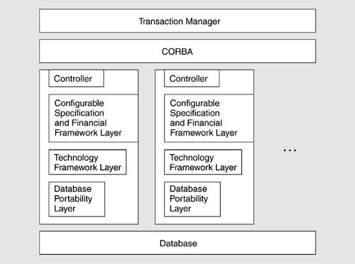
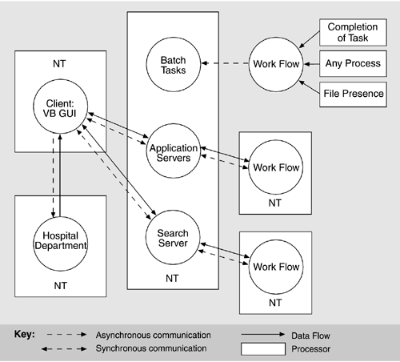
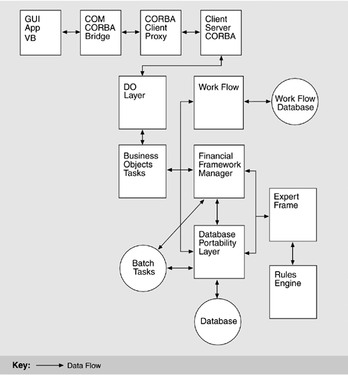

| [ Team LiB ] |
|
11.4 The Nightingale System: A Case Study in Applying the ATAMThis section will describe the ATAM in practice using a case study based on an actual evaluation. Identifying information has been changed to protect the client's confidentiality. PHASE 0: PARTNERSHIP AND PREPARATIONThe client or organization for the evaluation, which had approached us after reading about the ATAM on our Web site, was a major producer of health care systems software, aimed at the hospital, clinic, and HMO markets. The system under consideration was called Nightingale. We learned that it was a large system expected to comprise several million lines of code and that it was well into implementation. Nightingale already had its first customer, a hospital chain with forty-some hospitals throughout the southwestern United States. Why, we wanted to know, was our client interested in an architecture evaluation when the system was already well on its way to being fielded and sold? There were two reasons. First, if the architecture was fundamentally flawed in any way, it was much better to discover it sooner rather than later; second, the organization had strong ambitions to sell the system to many other customers, but recognized that it would have to tailor it specifically to the needs, applications, and regulatory environments of each one. Hence, while the architecture might be adequate for the first, kickoff customer, the client wanted to make sure that it was sufficiently robust and modifiable to serve as the basis for an entire product family of health care management systems. The system would serve as the information backbone for the health care institutions in which it was installed. It would provide data about patients' treatment history as well as track their insurance and other payments. And it would provide a data-warehousing capability to help spot trends (such as predictors for relapses of certain diseases). The system would produce a large number of on- demand and periodic reports, each tailored to the institution's specific needs. For those patients making payments on their own, it would manage the work flow associated with initiating and servicing what amounts to a loan throughout its entire life. Further, since the system would either run (or at least be accessible) at all of the health care institution's facilities, it had to be able to respond to a specific office's configuration needs. Different offices might run different hardware configurations, for instance, or require different reports. A user might travel from one site to another, and the system would have to recognize that user and his or her specific information needs, no matter the location. Negotiations to sign a statement of work took about a month—par for the course when legalities between two large organizations are involved—and when it was complete we formed an evaluation team of six people,[2] assigning roles as shown in Table 11.4.
For this exercise, we assigned two evaluation leaders who would take turns facilitating the proceedings. We have found this scheme markedly helpful in reducing fatigue and stress, and it makes for better results. We chose our questioners based on their familiarity with performance and modifiability. We also chose people with experience in integrating COTS products, since our client told us early on that Nightingale employed a few dozen commercial software packages. Happily, one of our questioners also had experience working in the health care industry. We held a one-day kickoff meeting attended by the evaluation team, the project manager, the lead architect, and the project manager for Nightingale's first customer. The last three constituted the decision makers for Nightingale. At the meeting, we heard more about Nightingale's capabilities and requirements, received a catalog of available architectural documentation (from which we chose those we wanted to examine), and compiled a list of stakeholders to attend phase 2. We agreed on a schedule for the phase 1 and phase 2 meetings and for the delivery of the final report. Finally, we went over the presentations that the project manager and the architect, respectively, would be requested to make for steps 2 and 3 of phase 1, and made sure they were clear on the information we would want to see. Later, before phase 1, our team met for two hours. The team leader went over the role assignments once again and made sure everyone knew his or her duties. Also, we walked through the architecture documentation we had received, making note of the patterns and tactics it indicated. This pre-meeting helped the team arrive at the evaluation somewhat knowledgeable about the architecture (thus increasing everyone's confidence), and it laid the groundwork for step 4, in which patterns and approaches would be cataloged. In the Nightingale evaluation, the meeting also raised a red flag about the documentation, which was incomplete and unclear. Whole sections had not yet been written, and by and large the architecture was presented as a set of inadequately defined box-and-line diagrams. We felt that, were we to begin phase 1 at this point, we would not be on a firm conceptual footing. So we telephoned the architect and asked him to verbally fill in some of the blanks. Then, though we knew there were still gaps in our knowledge, at least we felt comfortable enough to begin the evaluation. We made a note that inadequate documentation was a risk that we needed to catalog. PHASE 1: EVALUATIONAs called for in phase 1, the evaluation team met with the project's decision makers. In addition to those who had attended the kickoff meeting (the project manager, the lead architect, and the project manager for Nightingale's kickoff customer), two lead designers participated. Step 1: Present ATAMThe evaluation leader used our organization's standard viewgraph package that explains the method. The hour-long presentation lays out the method's steps and phases, describes the conceptual foundations underlying the ATAM (such as scenarios, architectural approaches, sensitivity points, and the like), and lists the outputs that will be produced by the end of the exercise. The decision makers were already largely familiar with ATAM, having heard it described during the phase 0 discussions, so this step proceeded without a hitch. Step 2: Present Business DriversAt the evaluation, the project manager for the client organization presented the business objectives for the Nightingale system from the development organization, as well as from organizations they hoped would be customers for the system. For the development organization, Nightingale addressed business requirements that included
The second business driver alerted us to the fact that this architecture was intended for an entire software product line (see Chapter 14), not just one system. For the kickoff customer, Nightingale was to replace the multiple existing legacy systems, which were
The kickoff customer's business requirements included
The business constraints for the system included
The technical constraints for the system included
The following quality attributes were identified as high priority:
The manager identified the following quality attributes as important, but of somewhat lower priority:
Step 3: Present ArchitectureDuring the evaluation team's interactions with the architect, before as well as during the evaluation exercise, several views of the architecture and the architectural approaches emerged. Key insights included the following:
Figure 11.3 shows a layered view of OLTM rendered in the informal notation used by the architect. Figure 11.4 depicts how OLTM works at runtime by showing the major communication and data flow paths among the parts of the system deployed on various hardware processors. We present these figures basically as we were given them to give you a better understanding of the reality of an ATAM evaluation. Note that they do not cleanly map; that is, in Figure 11.3 there is a transaction manager and CORBA, but these do not occur in Figure 11.4. This type of omission is typical of many of our ATAM evaluations, and one of the activities that occurs during step 3 is that the evaluators ask questions about the inconsistencies in the diagrams in an attempt to come to some level of understanding of the architecture. Figure 11.5 shows a similar runtime view of OLTM in which a transaction can be traced throughout the system, again with similar inconsistencies and, in this case, without a description of the meaning of the arrows. We determined that these arrows also represented data flow. Figure 11.3. Layered view of the OLTM in the the architect's informal notation Figure 11.4. A view showing communication, data flow, and processors of the OLTM Figure 11.5. Data flow architectural view of the OLTM All of these views of the Nightingale are equally legitimate and carry important information. Each shows an aspect relevant to different concerns, and all were used to carry out the analysis steps of the ATAM exercise. Step 4—Catalog Architectural ApproachesAfter the architecture presentation, the evaluation team listed the architectural approaches they had heard, plus those they had learned about during their pre-evaluation review of the documentation. The main ones included
These and other approaches gave the evaluation team a conceptual footing from which to begin asking probing questions when scenario analysis began. Step 5—Generate Quality Attribute Utility TreeTable 11.5 shows the utility tree generated during the Nightingale ATAM exercise. Notice that all of the quality attributes identified during step 2 appear and that each is refined into one or more specific meanings. A few of the quality attribute refinements have no scenarios associated with them. That often happens and it is not a problem. People are sometimes able to think of a reasonable-sounding refinement for a quality attribute, but, when pressed to instantiate it in the context of their own system, discover that it does not really apply. To capture the utility tree for all to see, the proceedings scribe used a flipchart page for each quality attribute and taped it to the wall. Then, as that quality attribute was refined and instantiated with scenarios, she captured the information on that flipchart or on continuation flipcharts taped underneath.[3]
The scenarios in Table 11.5 are annotated with the priority rankings assigned by the decision makers present. The first of each ordered pair indicates the importance of the capability; the second indicates the architect's estimation of the difficulty in achieving it.
Notice that some of the scenarios are well formed according to our earlier discussion, others have no stimulus, and still others have no responses. At this stage, the imprecision in scenario specification is permissible as long as the stakeholders understand the meaning. If the scenarios are selected for analysis, then the stimulus and response must be made explicit. Step 6—Analyze Architectural ApproachesThe utility tree exercise produced no scenarios ranked (H,H), which indicates high-importance, high-difficulty scenarios that merit high analytical priority. So we looked for (H,M) scenarios, a cluster of which appeared under "Modularity," hypothesizing the replacement of various COTS products in the system. Although extensive use of COTS was a purposeful strategy to reduce development risk, it was also worrisome to the project's management because it was felt that the system (and the customers to whom it was sold) would be at the mercy of a large number of COTS vendors. Therefore, achieving architectural flexibility to swap out COTS products was of keen interest. We walked through each of the scenarios with the architect. Each consumed, on average, about a half hour.[4] Since these were scenarios about changes, we asked about the range and impact of the changes. We learned the following.
And so forth. We continued this scenario, investigating replacement of the commercial Web-hosting engine, the commercial accounting package, the work flow engine, and the Solaris operating system on the Sun platforms. At this point, the phase 1 meeting ended. We had recorded six sensitivity points, one tradeoff point, four risks, and five nonrisks. PHASE 2: EVALUATION (CONTINUED)The phase 2 meeting commenced after a hiatus of two weeks. During the break, the evaluation team wrote up those parts of the final report that could be completed: the business drivers, the presented architecture, the list of approaches, the utility tree, and the phase 1 analysis. We also interacted via telephone with the architect to check our understanding of some technical points, and with the project manager to make sure that a good stakeholder representation would be present for phase 2. For phase 2, we had nine stakeholders present in addition to the project decision makers present during phase 1. They included developers, maintainers, representatives from the kickoff customer, and two end users. The first activities of phase 2 were to repeat step 1 (describing the ATAM) for the new participants, and then recap the results of phase 1 to bring everyone up to speed. After that, steps 7, 8, and 9 were carried out. Step 7—Brainstorm and Prioritize ScenariosThe stakeholders were a productive group, contributing a total of 72 scenarios during this step. More than a dozen of those scenarios were found at the leaves of step 5's utility tree but were not analyzed during phase 1. This was not only proper but encouraged. In this way, the stakeholders were expressing the view that some scenarios deserved more attention than they had received during phase 1. Table 11.6 contains a selection of some of the more interesting scenarios that emerged during step 7. Notice that many of them are not particularly well structured, and some are downright cryptic. This reflects the spontaneous nature of a brainstorming exercise in which everyone is actively engaged. Rather than spend several minutes structuring and wordsmithing each scenario as it arises, we like to concentrate on capturing thoughts while they are fresh in people's minds. If a scenario's meaning needs to be polished before voting occurs or before it is analyzed, then we are happy to spend the necessary time doing so (with the help of the person who proposed it).
After merging a few almost-alike scenarios, the stakeholders voted. We assigned 22 votes to each stakeholder (72 scenarios times 30%, rounded up to the nearest even integer), which they cast in two passes. We tallied the votes and spent a half-hour with the group placing the dozen or so highest-priority scenarios in the utility tree created during step 5. For this exercise, all of the high-priority step 7 scenarios were straightforwardly placed as new leaves of existing branches in the utility tree. This suggested that the architect was thinking along the same lines as the stakeholders in terms of important quality attributes. After reconciling the new scenarios with the utility tree, we began analyzing the scenarios that received the most votes. Step 8—Analyze Architectural ApproachesDuring step 8, we analyzed seven additional scenarios, a number slightly above average for an ATAM exercise. In deference to space limitations, the Scenario 15 sidebar summarizes the analysis for just one of them. Step 9—Present ResultsStep 9 is a one- to two-hour presentation summarizing the results and findings of the exercise. It begins with a boilerplate set of slides that contains a method recap and blank template slides that can be filled in with the business drivers summary, the architecture summary, the list of approaches, the utility tree, the scenario analysis, and the list of analysis outputs. The evaluation team meets during the evenings of phase 2 to compile all the results gathered so far. The phase 2 agenda also contains a block of time before step 9 when the team can caucus and complete the package. In addition to the risks, nonrisks, sensitivity points, and tradeoff points, the team presents risk themes that seem to systematically underlie the problematic areas of the architecture, if any. This is the only part of the results that the participants will not have already seen (and, for that matter, helped to identify). For each one, we also state why it matters in terms that will be meaningful to the client: We identify the stated business drivers that each risk theme jeopardizes.
For Nightingale, we identified three risk themes:
PHASE 3: FOLLOW-UPThe tangible output of the ATAM is a final report that contains a list of risks, nonrisks, sensitivity points, and tradeoff points. It also contains a catalog of architectural approaches used, the utility tree and brainstormed scenarios, and the record of analysis of each selected scenario. Finally, the final report contains the set of risk themes identified by the evaluation team and an indication of which business drivers are jeopardized by each one. Like the presentation of results, we use a boilerplate template that has many of the standard sections (such as a description of the ATAM) completed and templates for other sections ready to be filled in. We also write some of the final report—for instance, the utility tree and step 6 analysis—during the hiatus between phases 1 and 2. Preparation pays off; whereas it used to take about two weeks to produce a final report for an ATAM client, we can now produce a high-quality comprehensive report in about two days. |
| [ Team LiB ] |
|